Johannes Kepler: German (1571–1630)
Two of the most significant aspects in the field of astronomy as it relates to our solar system are that the sun is the center of the solar system and that the planets revolve around the sun on an elliptical path. The former of these two brilliant discoveries was made by the Polish mathematician Nicolaus Copernicus; the second, by Johannes Kepler. Kepler was born in the city of Weil der Stadt (about twenty miles west of today’s city of Stuttgart, Germany) on December 27, 1571, to a family that seemed to be faltering financially, even though his grandfather was the mayor of their town. Kepler’s father left the family and died soon thereafter—all when Kepler was five years old. As a child, he impressed his neighbors with his amazing mathematical memory and facility. His early exposure to astronomical events such as the Great Comet of 1577 and a lunar eclipse in 1580 had an indelible effect on him for the rest of his life by generating an interest in the field.
From a case of smallpox as a child, Kepler’s vision was impaired, and his hands’ dexterity was limited throughout the rest of his life, which was in part a hindrance in his observational work in astronomy. Despite these physical limitations, he still rose to the top of the field through his phenomenal achievements. In 1589, he began his studies at the University of Tübingen. His initial studies focused on philosophy and theology, but his mathematical talents shifted his interests toward that field of study. He was fascinated by Copernicus’s theory that the sun was the center of our universe—something not universally accepted in his day. In 1594, after completing his university studies at age twenty-three, he accepted a position as a teacher of mathematics and astronomy at Grazer evangelische Landschaftsschule im Paradeishof, the Protestant School in Graz, Austria. While in Graz, in 1596, Kepler published a major work, Mysterium Cosmographicum (Cosmographic Mystery), which further supported Copernicus’s belief of a heliocentric universe.
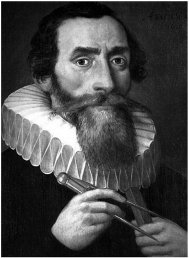
Figure 13.1. Johannes Kepler. (Portrait painted in 1610 by an unknown artist.)
It must be said that, in part, Kepler’s interest in having the sun at the center of the universe was motivated by his firm theological convictions regarding God. This publication was his attempt to define the sizes of spheres and the orbits in which they travel around the sun. Kepler used a rather strange model to depict the planetary motion about the sun.
Referring to the model shown in figure 13.2, according to Kepler, the outside sphere would represent the path of Saturn, then a sphere inscribed in a cube, which is inscribed in the first sphere, would represent the path of Jupiter. Then he inscribed a regular tetrahedron inside this smaller sphere, which would contain another sphere representing the path of Mars. Inside that sphere, a regular dodecahedron would be inscribed, and following this scheme, would separate Mars from Earth. Then a regular icosahedron would separate Earth from Venus, and, finally, a regular octahedron inscribed in the last sphere would separate Venus from Mercury. As confusing as this would seem to the modern eye, it gave Kepler some new fame. After his book was published in Tübingen, a copy was sent to Prague to the Danish astronomer Tycho Brahe, who was one of the foremost astronomers of his day, and who was in search for a mathematician to support his research. In 1600, Kepler met Brahe in the town of Benátky nad Jizerou, about twenty-two miles from Prague, where Brahe’s observatory was being built. There, he spent time analyzing the data found, and, as time went on, he was given more access to the findings that were originally kept under guard. At first, it was a rocky relationship, but eventually they came to agree on salary and living arrangements.
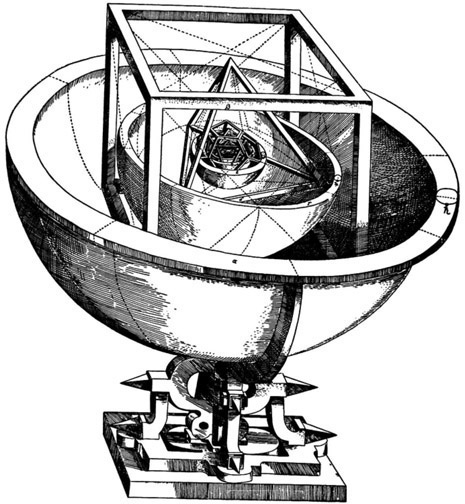
Figure 13.2. (Johannes Kepler, Mysterium Cosmographicum, 1596.)
Kepler took this position and then eventually succeeded Brahe when, shortly thereafter, Brahe died in 1601. The next eleven years were Kepler’s most productive. Brahe assumed that the planets were traveling in circular orbits. Working with Brahe’s conclusions, Kepler found that Mars was traveling in an elliptical orbit with the sun at one focus. To come up with this finding, known as Kepler’s first law of planetary motion, he worked with numerous astronomical observations. These observations were then extended to the other planetary motions. Kepler’s second law of planetary motion was to state that the line segment joining a planet to the sun in its elliptical path swept out equal areas in equal time periods. He published this in 1609 in a book titled Astronomia Nova (New Astronomy). The process to establish these two laws required many observations and calculations, which are still available to us today. In 1990, an American science historian, William H. Donahue, translated this book into English and found that Kepler had made some errors in his calculations; or, as we might say today, he fudged the data a bit in order to draw the conclusions for which he then later became very famous. Donahue says that this should not detract from Kepler’s findings.1 More than likely, this fudging compensated for the primitive tools Kepler was forced to use in the seventeenth century. This was reported in the New York Times on January 23, 1990.
Building upon Galileo’s telescope, Kepler, who was already fascinated with optics, presented a new design for a telescope, using two convex lenses, where the final image is inverted. This was originally referred to as a Keplerian telescope and today is referred to as an astronomical telescope. He published the results of his work, in 1611, in Dioptrice.
Now, looking back to Kepler’s personal life, we find that in 1597, Kepler married Barbara Müller, a widow from a wealthy background. Shortly after their marriage, they had two children, both of whom died at birth; the couple later had additional children. Then, in 1611, Kepler’s seven-year-old son died, which upset him tremendously, and, making matters worse, shortly thereafter, his wife died. This was the time when, in Prague, tolerance for Protestants was not very good. At first, Kepler was given special dispensation to practice Lutheranism on his own, but eventually he decided rather than to convert to Catholicism, he would leave Prague with his remaining children and settle in the town of Linz, Austria. Now with children to care for and no wife, he was in search of someone to fill that role. During the next two years he considered eleven different matches. Then, in 1613, he married his second wife, the twenty-four-year-old Susanna Reuttinger, who took over the household, splendidly cared for his three children, and bore him another six children, of which only three survived.
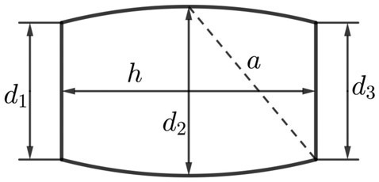
Figure 13.3.
At his wedding to Susanna, Kepler noticed that the volume of the wine barrels was measured by a rod that was slipped into the barrel diagonally (see fig. 13.3). This measurement amazed Kepler and he began to consider it more scientifically.
The volume of the barrel was then calculated as V = 0.6 a3, where a is the length of the rod inside the barrel. The same method was applied to barrels of different shapes, and Kepler recognized that the formula cannot give correct results in all cases, since the precise mathematical relation between the exact volume of the barrel and the length of a must depend on its proportions. This problem fascinated him, and he undertook a study of volumes, which could be seen as solids created through the revolution of a plane surface. First, let us consider the simplest case of a cylindrical barrel, for which d1 = d2 = d3. The volume of a cylinder with diameter d and height h is
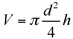
. By the Pythagorean theorem, we have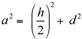
. A typical relation between h and d for the wine barrels Kepler studied would be h = 2d. Using this in the equation for a2, we obtain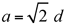
, or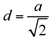
and, moreover,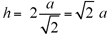
. Expressing d and h in terms of a in the equation for the volume, we get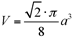
and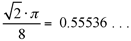
. . . , explaining the approximation formula V ≈ 0.6a3. Kepler found a much more accurate formula by approximating the curvature of the barrel by a parabola. This formula is now generally known as Simpson’s rule2 (however, in Germany and Austria, it is also called Kepler’s rule):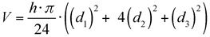
To derive this formula, one has to calculate the area of a parabolic segment, a problem solved by Archimedes using methods essentially equivalent to the concept of integration in modern calculus. We will not provide a proof of Kepler’s rule (or Simpson’s rule), but present the result by considering a special approximation without using parabolas, from which Kepler’s formula for the volume of a wine barrel can also be obtained. To this end, we divide the barrel into three rotational volumes of equal height: a frustum3 of a cone at the bottom, a cylindrical part in the middle, and another frustum at the top (see fig. 13.4).
The volume of the cylinder is equal to the area of the base times the height, that is,
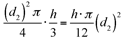
. To get an approximate value for the volume of a frustum, we replace it by a cylinder, whose base area is equal to the mean cross-sectional area of the frustum. Note that this will give not the exact volume of a frustum but a fairly good approximation if the area at the bottom does not differ too much from the area at the top (i.e., if the frustum is close to a cylinder). The mean cross-sectional area of the first frustum is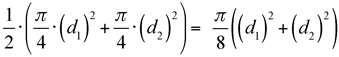
and the mean cross-sectional area of the second frustum is, therefore,
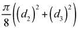
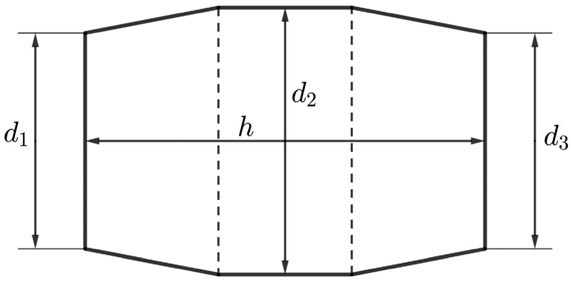
Figure 13.4.
Multiplying these expressions by
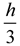
and adding the volume of the cylindrical middle part, we get a good approximation of the total volume of the wine barrel, if its shape does not deviate too much from a cylinder: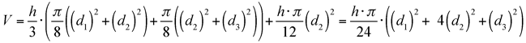
which is in exact agreement with the rule Kepler proposed. Kepler published his findings on generating volumes in 1615, in a work that was later refined by the Italian mathematician Bonaventura Cavalieri (1598–1674). Today we know this procedure as Cavalieri’s principle. In 1619, while in Linz, Kepler published his second work on cosmology, titled Harmonices mundi Book V (Harmony of the World, Book V).
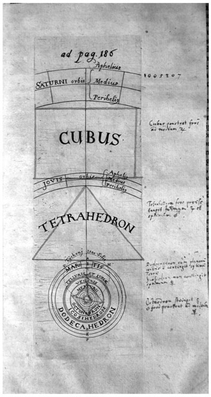
Figure 13.5. Harmonices mundi, Book V, 1619.
Of particular importance in this publication is what we today call Kepler’s third law of planetary motion, which states that, for any two planets, the ratio of the squares of their periods (i.e., one complete revolution) is equal to the ratio of the cubes of the mean radii of their orbits. In 1621, Kepler published a second version of his ideas in Mysterium Cosmographicum—although in much shorter form and correcting much of what he consequently found to be inaccurate in the original work. Kepler remained very active in computational matters, not the least of which was motivated by the writings of Scottish mathematician John Napier, on logarithms. He published his computations in Rudolphine Tables in 1627, which included eight-place logarithms.
His book on a variety of tables is often considered one of his greatest works, but, as we can see in figure 13.6, it was not published until 1627. This is because there were legal disagreements with Tycho Brahe’s heirs as to ownership of the work. In 1625, the religious tension in Europe between Catholics and Protestants led to the Counter-Reformation, placing most of Kepler’s library under seal. By 1626, the city of Linz was besieged, and Kepler was forced to move to the city of Ulm, Germany, where the Rudolphine Tables was ultimately printed. The battles subsided in 1628, and Kepler became an official advisor to the Bohemian general Albrecht von Wallenstein (1583–1634); in this capacity, he provided astronomical calculations for various astrologers. He did quite a bit of traveling in his last years, between Prague, Linz, and Ulm. He fell ill in the city of Regensburg, Germany, and died on November 15, 1630. He was buried there, but, in later years, the cemetery was decimated; therefore, there is no gravesite for Kepler, but there are monuments to him in both Prague and Linz.
Let us now review the three laws of planetary motion that have bestowed upon Kepler the most fame.
Kepler’s First Law: Planets move about the sun in an elliptical orbit, with the sun at one focus of the ellipse (see fig. 13.7).
Kepler’s Second Law: The speed of a planet traveling along an elliptical orbit, with the sun at one focus, is such that the line joining the sun and the planet sweeps out equal areas during equal time periods. (See fig. 13.8, where the two shaded regions have equal areas.)
Kepler’s Third Law: The square of the orbital period of a planet is proportional to the cube of the semi-major axis of its orbit, as shown in figure 13.9.
It must be said that these three laws that Kepler discovered are truly amazing, especially given the limitations of the astronomical tools that were available during his time. As mentioned earlier, we can consider him extraordinarily clever to have seen these relationships despite the inaccuracy of his measurements.
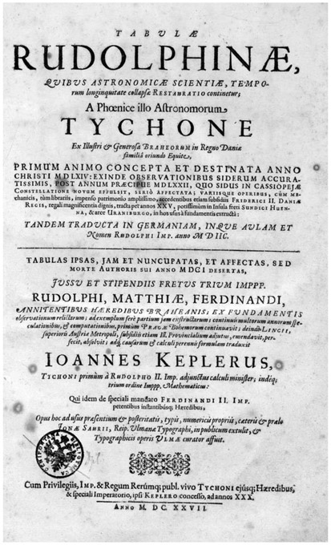
Figure 13.6. Rudolphine Tables, 1627.
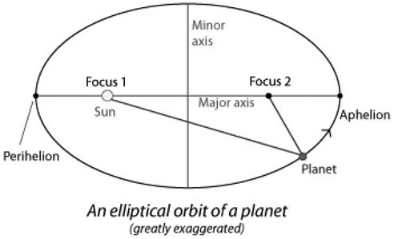
Figure 13.7. (Image by Brian Ventrudo, The One Minute Astronomer [Mintaka, 2008], ebook.)
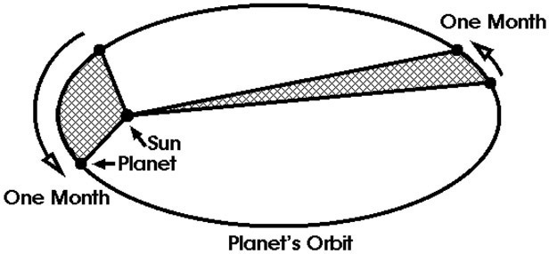
Figure 13.8. (Image by Brian Ventrudo, The One Minute Astronomer [Mintaka, 2008], ebook.)
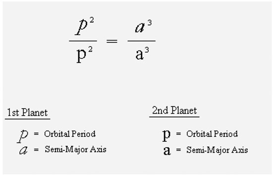
Figure 13.9.